Implementasi CRUD pada Framework Laravel
Praktikum ini membahas pengembangan aplikasi web modern berbasis framework PHP dengan menerapkan konsep MVC (Model-View-Controller). Laravel menyediakan berbagai fitur seperti migration, routing, model, controller, dan view yang membantu proses pengelolaan database serta pembuatan sistem CRUD menjadi lebih terstruktur dan efisien.
Pada praktikum ke-7 ini, mahasiswa mempelajari komponen inti Laravel yaitu Migration untuk mendefinisikan struktur tabel pada database seperti kolom dan tipe datanya. Seeding berfungsi untuk mengisi data awal atau data dummy ke dalam database agar dapat digunakan untuk pengujian aplikasi. Routing digunakan untuk mengatur alamat URL dan menghubungkannya dengan controller yang sesuai. Model berfungsi sebagai penghubung antara aplikasi dengan database, seperti mengambil, menyimpan, dan mengelola data. Controller berperan sebagai pengatur logika program yang mengolah permintaan dari user, memproses data melalui model, kemudian mengarahkan ke view. View merupakan bagian yang menampilkan antarmuka pengguna seperti form dan tabel data. Keseluruhan komponen tersebut dapat diintegrasikan dalam pembuatan aplikasi CRUD sederhana.
Mampu memahami struktur dan alur kerja Laravel sebagai salah satu framework yang banyak digunakan dalam pengembangan aplikasi web.
Mampu mengelola database menggunakan Migration dan Seeding
Mampu membuat dan mengatur Routing aplikasi termasuk routing parameter, named route, dan route group.
Mampu membangun Model untuk interaksi data dengan database menggunakan Eloquent ORM Laravel.
Mampu mengembangkan Controller sebagai penghubung Model-View dan membuat tampilan menggunakan Blade Template.
Mampu mengimplementasikan semua konsep dalam bentuk aplikasi CRUD sederhana sebagai dasar untuk pengembangan website tingkat lanjut.
Buka file .env lalu ubah konfigurasi database sebagai berikut.
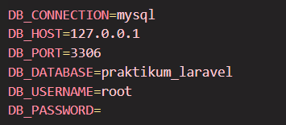
Migration adalah fitur Laravel yang digunakan untuk membuat dan mengelola struktur database menggunakan kode program. Migration memudahkan developer dalam membuat tabel, mengubah struktur tabel, menghapus tabel, dan versioning database.
Untuk membuat tabel products, kita menggunakan migration: php artisan make:migration
create_products_table.
File migration akan berada pada folder database/migrations. Lalu tambahkan perintah pada
file tersebut seperti berikut.
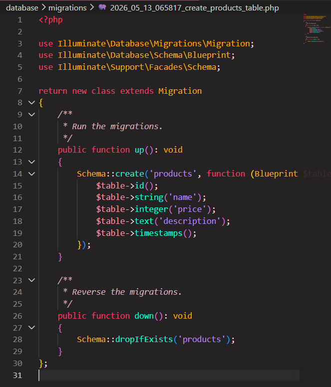
Jalankan migration dengan perintah php artisan migrate.
php artisan migrate:rollback digunakan untuk membatalkan migration,
dan php artisan migrate:fresh digunakan untuk menjalankan ulang seluruh migration.
Seeding digunakan untuk mengisi data awal ke database. Seeder sangat membantu dalam pengujian aplikasi, pembuatan data dummy, dan untuk menyiapkan data awal sistem.
Untuk membuat seeder, kita menggunakan perintah: php artisan make:seeder
ProductSeeder.
File seeder akan berada pada folder database/seeders. Buka file ProductSeeder.php lalu ubah
menjadi:
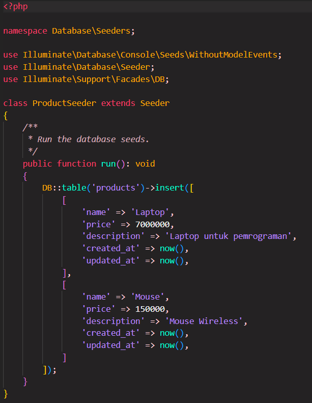
Tambahkan pemanggilan seeder pada file DatabaseSeeder.php seperti berikut.
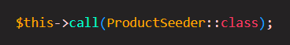
Jalankan seeder dengan mennggunakan perintah: php artisan db::seed
php artisan
migrate:fresh --seed
Routing digunakan untuk menentukan URL dan respon yang diberikan aplikasi. Semua routing web berada pada file
routes/web.php.
Terdapat beberapa jenis routing:
Routing Dasar
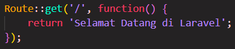
Routing Parameter
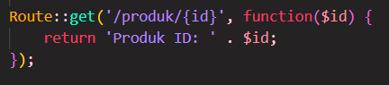
Named Route
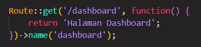
Route Group
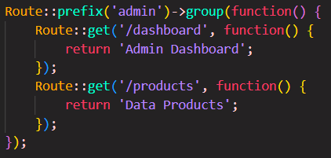
Model digunakan untuk berinteraksi dengan database. Laravel menggunakan Eloquent ORM untuk mempermudah manipulasi data.
Pada folder App\Models, buka file Product.php. Kemudian ubah seperti berikut.
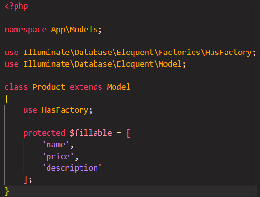
Controller digunakan untuk mengatur logika aplikasi serta menjadi penghubung antara model dan view. Di dalam controller, seluruh proses utama seperti pengolahan request dari user serta operasi CRUD diatur sebelum data ditampilkan ke view atau disimpan ke dalam database.
Menambahkan Data
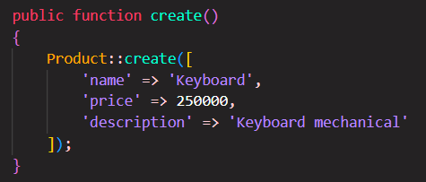
Menampilkan Data
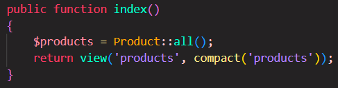
Mengubah Data
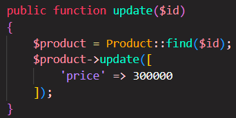
Menghapus Data
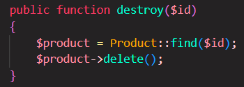
Untuk membuat controller, kita menggunakan perintah: php artisan make:controller ProductController.
File akan berada pada folder App\Http\Controllers. Buka file ProductController.php.
Ubah seperti berikut.
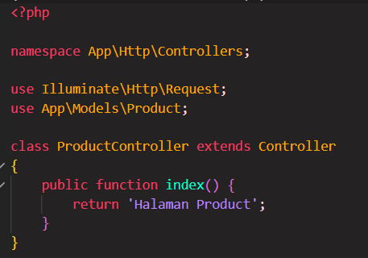
Untuk menghubungkan route ke controller, pada file web.php tambahkan perintah berikut.
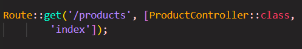
Untuk Resource Controller, kita bisa gunakan perintah: php artisan make:controller ProductController --resource.
Method yang tersedia pada Resource Controller adalah sebagai berikut.
| Method | Fungsi |
|---|---|
| index | Menampilkan semua data |
| create | Form untuk menambah data |
| store | Menyimpan data |
| show | Menampilkan detail data |
| edit | Form untuk mengedit data |
| update | Mengubah data |
| destroy | Menghapus data |
View digunakan untuk menampilkan halaman kepada pengguna. Laravel menggunakan Blade Template Engine.
File view berada pada folder resources/views. Buat file products.blade.php,
lalu buat file HTML seperti berikut.
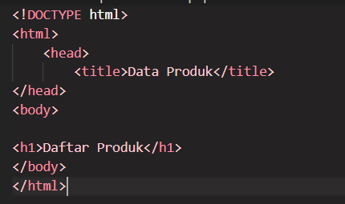
Untuk menampilkan view dari route, tambahkan perintah berikut pada file web.php.
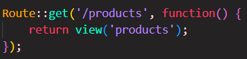
Blade layout adalah fitur templating pada framework Laravel yang digunakan untuk membuat kerangka tampilan yang dapat digunakan ulang pada banyak halaman. Dengan blade layout, kita tidak perlu menulis bagian yang sama seperti header, navbar, footer, sidebar, dan struktur HTML dasar.
Directive Blade yang sering digunakan:
| Directive | Fungsi |
|---|---|
| @extends | Menggunakan layout |
| @section | Membuat section |
| @yield | Menampilkan section |
| @include | Memanggil file lain |
Buat folder layout dalam resources/views, kemudian buat file app.blade.php di dalamnya. Lalu isi dengan
source code seperti berikut
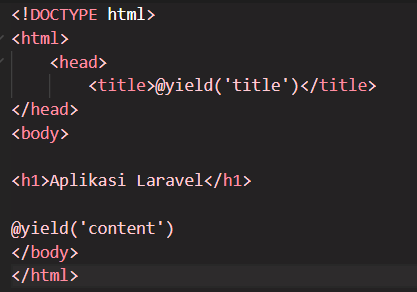
Pada file products.blade.php, gunakan layout seperti berikut.
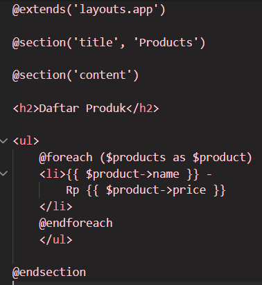
Setelah mengatur semua komponen, jalankan perintah php artisan serve lalu buka URL
http://127.0.0.1:8000/products. Maka akan muncul tampilan seperti berikut ini.
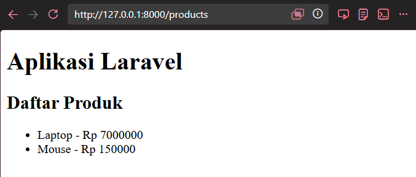
| Kategori | Perintah |
|---|---|
| php artisan serve | Menjalankan server lokal |
| php artisan migrate | Menjalankan migration |
| php artisan db:seed | Menjalankan seeder |
| php artisan make:model | Membuat model baru |
| php artisan make:controller | Membuat controller baru |
| php artisan route:list | Menampilkan daftar route |
| php artisan cache:clear | Membersihkan cache |
| php artisan make:model -mcs | Shortcut: Model + Migration + Controller + Seeder |
php artisan make:model Product -mcs untuk membuat Model, Migration, Controller,
dan Seeder sekaligus. Parameter yang digunakan: -m migration -c controller
-s seeder.
Implementasi Migration, Seeding, Model, Route, Controller, dan View untuk CRUD data mahasiswa.
Setelah membuat database baru, buat tabel mahasiswa menggunakan perintah php artisan make:migration create_products_table.
File baru akan berada pada folder database/migrations.
Buka file tersebut kemudian ubah seperti berikut.
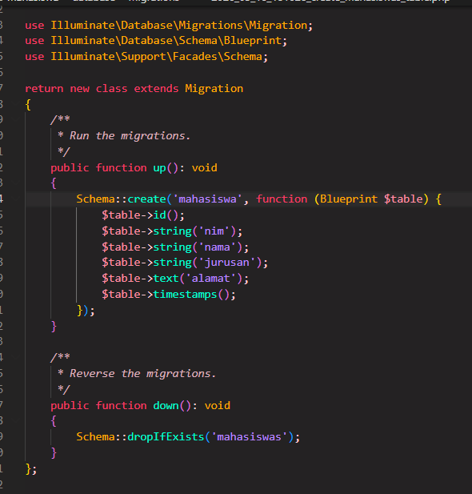
Lalu ketik perintah php artisan migrate untuk menjalankan migration. Tabel akan otomatis terbentuk.
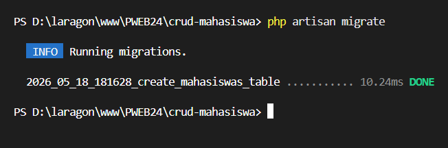
Jalankan perintah php artisan make:seeder MahasiswaSeeder di terminal untuk membuat file seeder.
Lalu buka file MahasiswaSeeder.php, tambahkan perintah berikut.
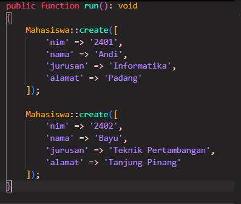
Kemudian, pada file DatabaseSeeder.php daftarkan seeder yang telah dibuat sebelumnya seperti berikut.
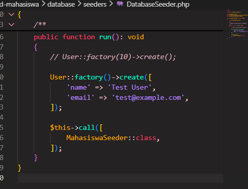
Jalankan php artisan make:model Mahasiswa -m untuk membuat model Mahasiswa. Buka file Mahasiswa.php
Tambahkan kode berikut.
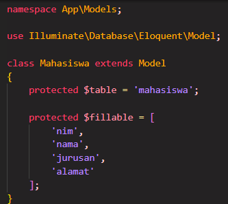
Jalankan php artisan make:controller MahasiswaController --resource dan lengkapi masing-masing method CRUD.
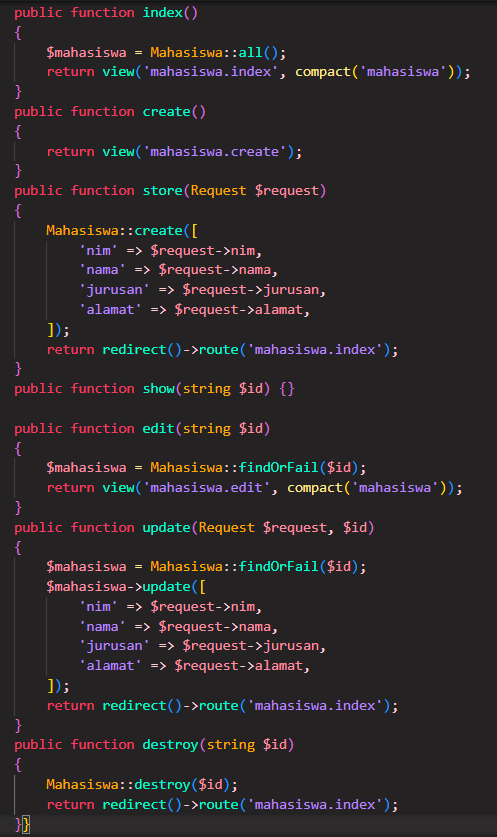
Tambahkan Route::resource('mahasiswa', MahasiswaController::class); pada file web.php.
Buat folder dengan nama mahasiswa pada folder resources/views. Tambahkan file baru dengan nama
create.blade.php, edit.blade.php, dan index.blade.php.
Pada view index.blade.php, ketik html berikut.
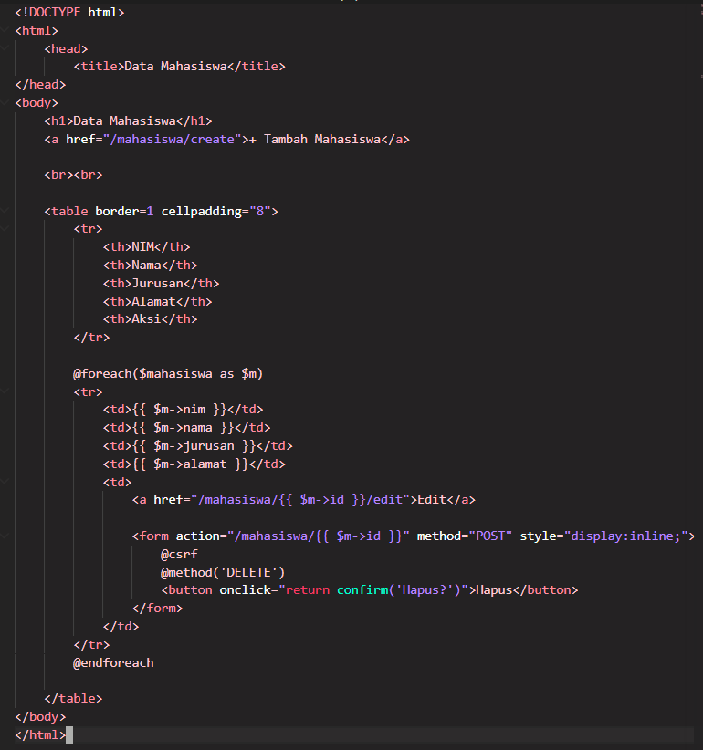
Selanjutnya, untuk create.blade.php diisi sebagai berikut.
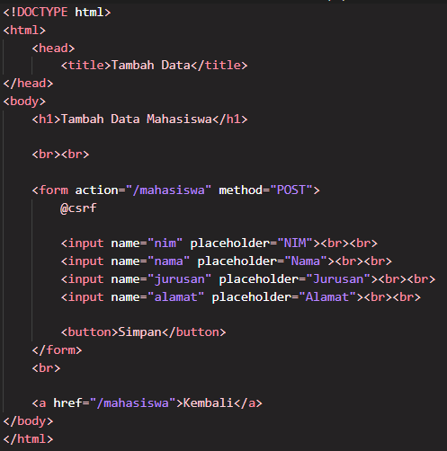
Untuk edit.blade.php seperti berikut.
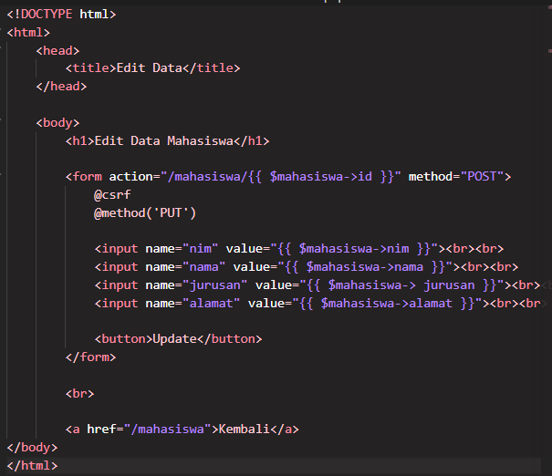
Setelah menjalankan php artisan serve, buka URL http://127.0.0.1:8000/mahasiswa.
Maka akan muncul tampilan seperti berikut.
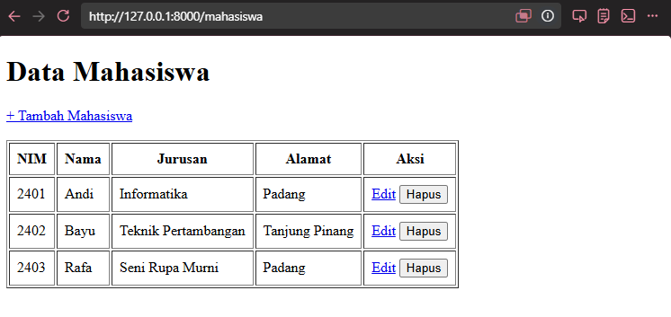
Jika tombol Tambah Mahasiswa diklik, maka akan muncul halaman berikut.
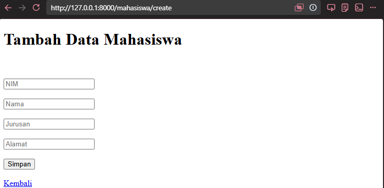
Kemudian, pada tombol aksi Edit, akan muncul tampilan berikut.
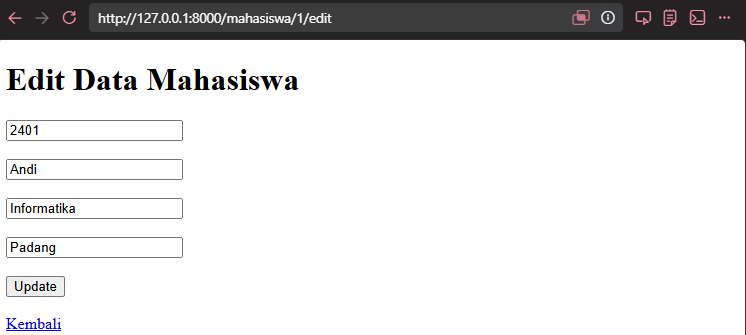
Project tersebut dapat berjalan dengan baik dan berhasil mengimplementasikan CRUD dengan komponen Migration, Seeding, Model, Routing, Controller, dan View.
Dari praktikum yang telah dilakukan, telah dipelajari dan dipraktikkan kegunaan komponen-komponen inti dalam pengembangan aplikasi website menggunakan framework Laravel.
Kode project dapat diakses melalui repository Github berikut.
Buka Github